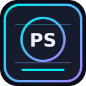

2026 // ROSIE PHANTOM EDITION⌂ BACK TO MASTER HUB
GLITCHBYTE PHANTOM LABS // PORTFOLIO PREVIEW
ROSIE'S PHANTOM LAB
Public-source research tools, local evidence workflows, honest technical documentation, and a distinct cyberpunk visual identity.
Explore published-style tool guidesProject showcase


PHANTOM SPINE
Local tool integration, offline demos, and explicit adapter behavior.
Read guide →
Preview only: This is an offline HTML page, not a hosted public website. It includes no personal reports or automatically discovered installed directories. The tool commands require separate local installs.
Official independently published PHANTOM SPINE v0.2.0 · View real GitHub Release and checksum. This offline preview never executes tools or reads private reports.